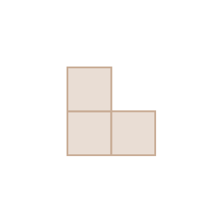
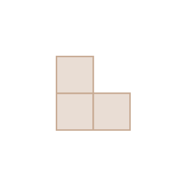
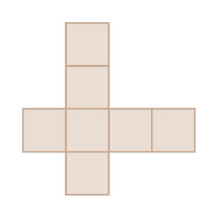
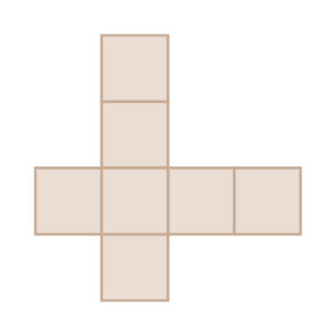

- 문제 1
- 문제 2
- 문제 3
- 문제 4
- 문제 5
- 문제 6
- 문제 7
- 문제 8
-
[문제 1~문제 5]도형의 배열을 보고 물음에 답하시오.
빈칸에 알맞은 수를 써넣으시오.
첫째둘째셋째넷째첫째 둘째 셋째 넷째 작은 정사각형 조각의 수(개) 1 4 916 -
-
[문제 1~문제 5]도형의 배열을 보고 물음에 답하시오.
일곱째 도형의 작은 정사각형 조각의 수를 구해 보시오.
첫째둘째셋째넷째개49 -
[문제 1~문제 5]도형의 배열을 보고 물음에 답하시오.
다섯째 도형의 파란 정사각형 조각의 수를 구해 보시오.
첫째둘째셋째넷째개9 -
[문제 1~문제 5]도형의 배열을 보고 물음에 답하시오.
도형의 배열에서 규칙을 찾아보시오.
첫째둘째셋째넷째-
예
파란색 도형은 왼쪽과 위쪽으로 각각 1개씩 늘어납니다. 빨간색 도형은 가로, 세로가 각각 0개, 1개, 2개, 3개······인 정사각형 모양이 됩니다.
-
예
-
도형의 배열을 보고 다섯째에 알맞은
 의 개수를 구하시오.첫째둘째
의 개수를 구하시오.첫째둘째 셋째넷째개11
셋째넷째개11 -
도형의 배열에서 여섯째에 알맞은 모형의 수를 구하시오.
첫째 둘째
둘째 셋째
셋째 넷째개12
넷째개12 -
규칙에 따라 다섯째에 알맞은 도형을 그리시오.
첫째둘째 셋째넷째
셋째넷째 다섯째
다섯째
 여섯째
여섯째